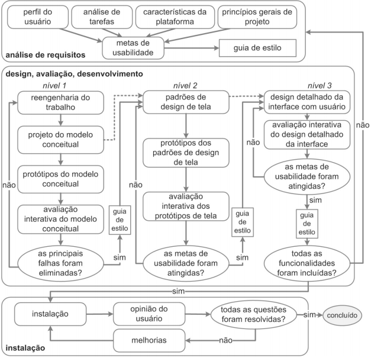

Planejamento
Planejamento
O planejamento de projetos é uma série de práticas feitas no início do projeto, ou de cada onda ou Sprint, para estruturar os detalhes que devem guiar o gerenciamento e a execução do projeto. Esse planejamento visa esclarecer as atividades necessárias para analisar a interface do site Estagiarios.com durante o semestre.
Sites Avaliados
Os seguintes sites foram levados em consideração para serem trabalhados na disciplina. Eles foram sugeridos com base nas experiências de uso dos próprios integrantes e por indicaçãp de pessoas próximas dos membros.
- SPTrans;
- Simula Bolsa;
- Shopping Correios;
- Prime Video;
- Correios;
- Site da UnB;
- Estagiarios.com(escolhido).
Cronograma
Processo de Design
Foi escolhido a Engenharia de Usabilidade de Mayhew. Ela é constituída por 3 partes :
-
Análise de Requisitos: são definidas as metas de usabilidade com base no perfil dos usuários, tarefas a serem feitas, plataforma e princípios gerais de design;
-
Design, avaliação e desenvolvimento : consiste na concepção de uma solução que atenda os requisitos levantados na etapa anterior. Durante o desenvolvimento a interface deve ser avaliada com os usuários;
-
Instalção : as opiniões dos usuário devem ser coletadas (após um tempo de uso) para melhorar o sistemas em versões futuras ou adaptar outros com problemas semelhantes.

Fonte: Livro IHC [1]
| Data | Versão | Descrição | Autor(es) |
|---|---|---|---|
| 18/09/20 | 0.1 | Criação do Documento | Nícalo Ribeiro |
| 19/09/20 | 0.2 | Topico Sites Avaliados | Felipe Agustini,Gustavo Nogueira e Nícalo Ribeiro |
| 20/09/20 | 0.3 | Topico Processo de Design | Felipe Agustini,Gustavo Nogueira e Nícalo Ribeiro |
Referências
[1] BARBOSA, Simone; SILVA, Bruno. Interação Humano-Computador. Rio de Janeiro – RJ: Elsevier Editora Ltda, 2010.